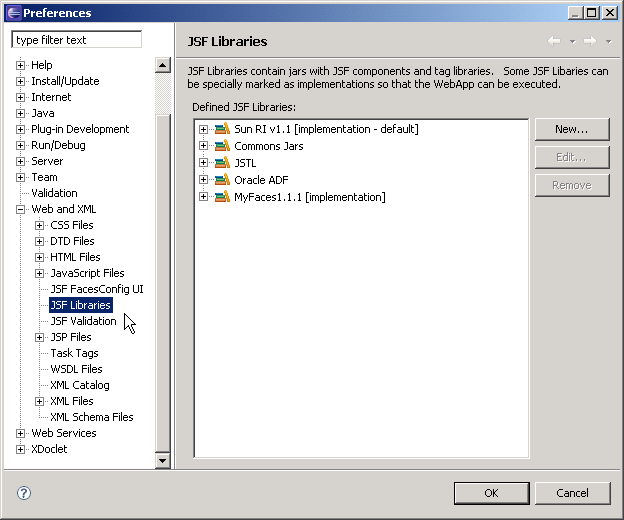
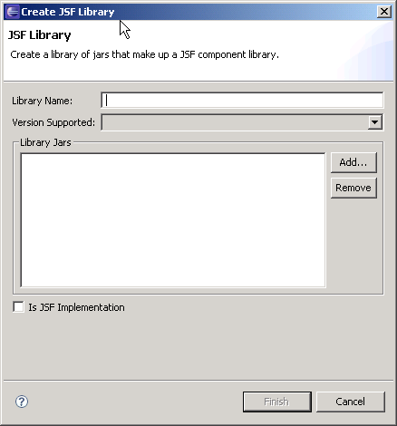

To create or update a JSF Library, Window -> Preferences... -> Web and XML -> JavaServer Faces Tools -> Libraries
Initially your list of libraries may be empty unless there is a plugin-provided library present.
To create a new JSF Library, select "New..." button.
On this dialog you must:
Optionally you may:
Click "Finish" button to create your new JSF Library
There may be a need to update the jars associated with this library. This can occur if:
To update the selected JSF Library, choose "Edit..."

There is currently no way to update a jar entry to locate a missing jar. You must first remove the missing jar and then add it back.
Changes will be saved after you click "Finish" button.